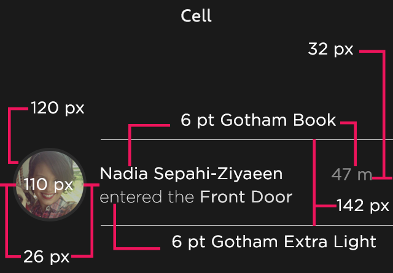
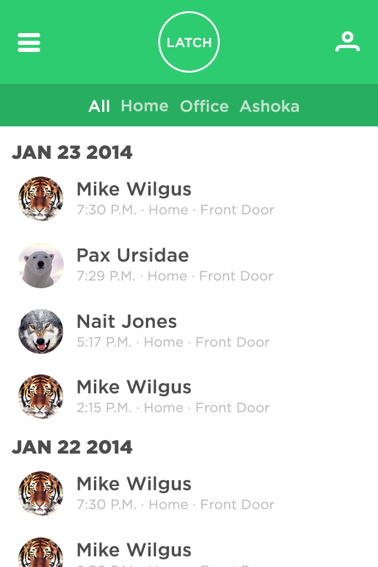
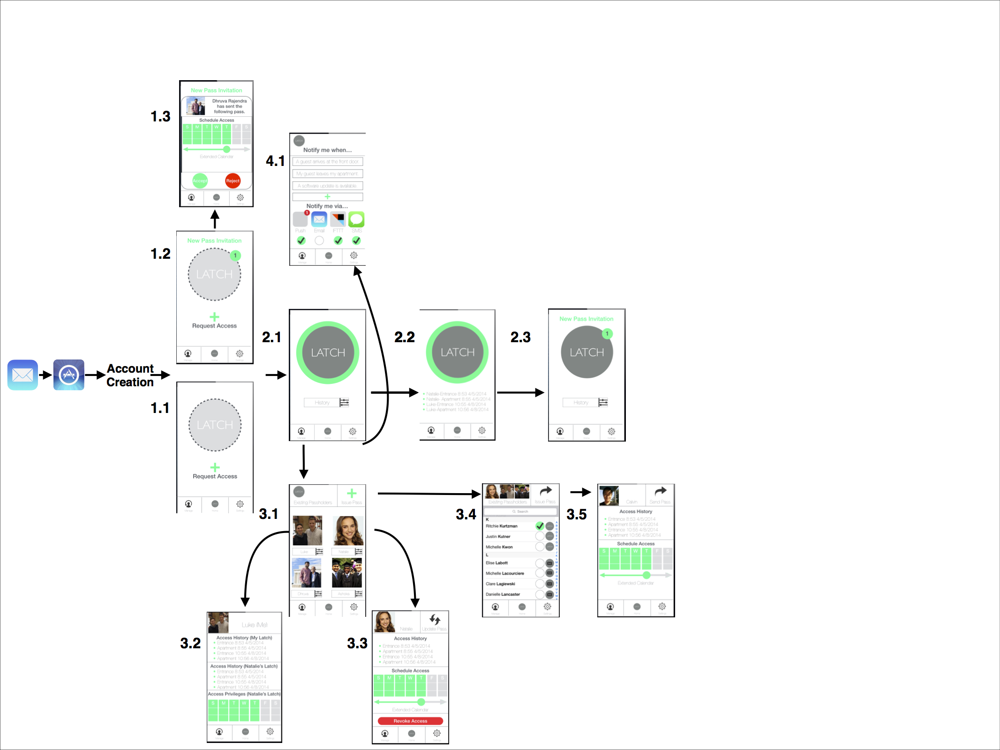
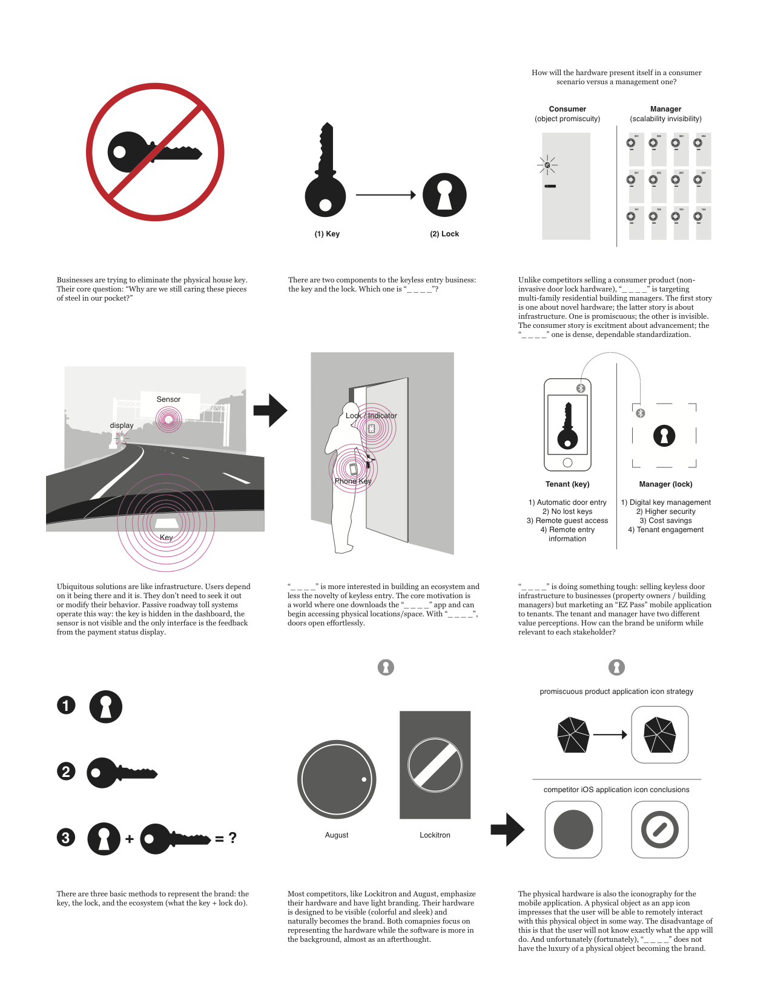

Latch
Latch targeted professionals between 22 to 40. The audience was young and tech savvy. We believed that younger people would be open to smart locks in their apartments and offices.
The initial interface drew inspiration from media outlets like MTV. After testing with building managers, the wide color pallet proved too playful. Management companies expressed the need for a professional and mature looking interface.
  We narrowed the color pallet and used blue as our primary color. We used sea foam green, Latch’s brand color, as an accent color.
Avenir is a precise, geometric typeface and can be easily read on a mobile screen. The font is elegant and satisfied our stakeholder’s desire for professionalism.

Designing the Latch experience required us to pull inspiration from existing systems like EZ Pass. There could be 0% failure when it comes to opening your door. It just needs to work. We focused creating a tangible lock by ensuring that it provided feedback / data when necessary, such as when someone new gets a key to your house
Our designs secured seed funding from venture capitalist firms TechStars and RGA. Our prototypes attracted angel investors. After delivering, we also connected Latch with a full-time, lead designer, Thomas Meyerhoff.